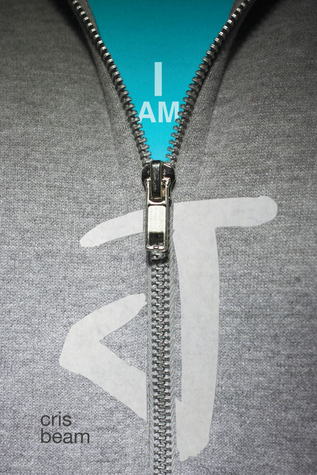
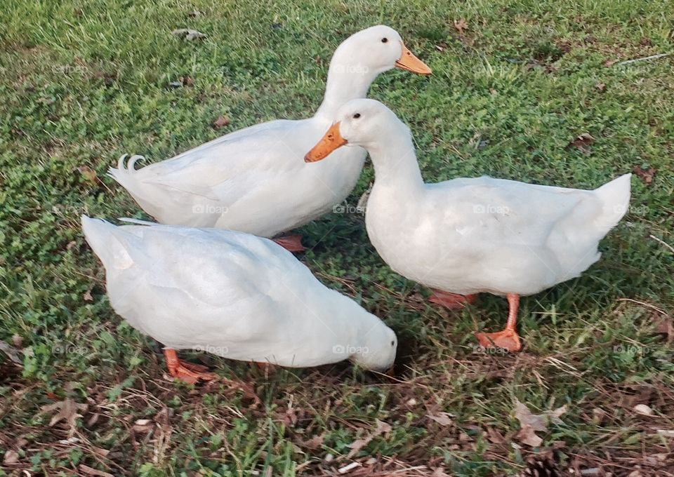
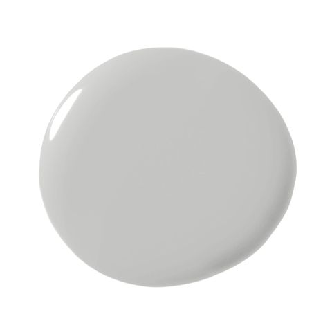
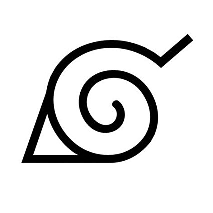

Welcome to my page.
2019
Bio: I am a rising Junior in San Jose, California. I am currently a Girls Who Code participant and a volunteer at Happy Hollow Zoo. I live with my family. I enjoy sleeping, reading, writing, playing video games, and watching tv.
Favorite Things: My favorite books are I am J and Dreaming of Sunshine . My favorite song is “Hey Brother." My favorite food is duck. My favorite color is grey.
  
Likes: jackets, shorts, water, Marvel, DC, Pokemon, Naruto, animals, friends

Dislikes: Waking up, poorly written books, gum, old people, fantasy genre, jeans